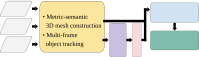
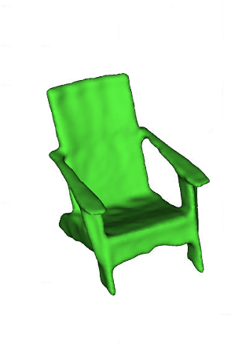

Hydra++: Real-Time Hierarchical 3D Scene Graph Construction With Object-Level Shape Estimation

Abstract
3D scene graphs provide a hierarchical abstraction of environments by encoding spatial entities and their relationships. Existing scene graph systems usually model object geometry with partial point clouds or class-level CAD templates, limiting instance-specific shape detail. Hydra++ integrates category-agnostic shape estimation into a hierarchical 3D scene graph pipeline, adds a reprojection-mask consistency check to reject degenerate shape predictions, and supports a hybrid LiDAR-camera configuration for large-scale outdoor operation. Experiments in simulation and real-world outdoor campus scenes show improved object-level and scene-level reconstruction quality.
What Hydra++ adds
Object-level shape estimation | Learning-based estimators reconstruct full object meshes from partial observations, improving the geometry stored in the scene graph.
Reprojection-mask consistency check | RMCC rejects unreliable predictions caused by partial views or imprecise instance segmentation.
Hybrid outdoor mapping | LiDAR supplies metric scene structure while camera observations support object shape estimation for outdoor campus-scale scenes.
Estimator trade-off study | The default CRISP-based configuration targets online operation, while SAM3D is studied as a modular alternative for generalization-latency trade-offs.
Method
Hydra++ extends the Hydra and Khronos scene graph pipeline with shape estimation, RMCC verification, and a hybrid LiDAR-camera mode.

 RGB-D only
RGB-D only
 Hybrid
Hybrid
 Hybrid + adaptive
Hybrid + adaptive
Results
Hydra++ reconstructs instance-level geometry rather than relying only on partial observations or fixed class templates. In outdoor scenes, the hybrid LiDAR-camera mode recovers object meshes for examples such as a fire hydrant, car, and bench.
SlideSLAM


Hydra


Khronos


Hydra++



BibTeX
@misc{limTBUhydrapp,
title = {{Hydra++}: Real-Time Hierarchical 3D Scene Graph Construction With Object-Level Shape Estimation},
author = {Lim, Hyungtae and Hughes, Nathan and Yu, Xihang and Xu, Ruihan and Chang, Yun and Shi, Jingnan and Talak, Rajat and Carlone, Luca},
howpublished = {(TBU)},
year = {(TBU)}
}